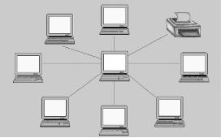
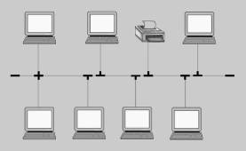
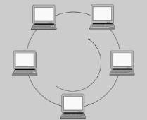
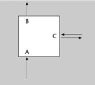

Topologías de Red
La topología lógica de una red local define la manera como se conectan las estaciones que la forman al medio de transmisión. Dicho de otra manera, la topología es la forma que toma el medio que comparten las estaciones.
Hay redes cableadas y redes sin hilos. En las primeras, el medio es tangible, por lo tanto se le puede dar una forma, mientras que en las redes sin hilos el medio de transmisión es el aire o el vacío, y por lo tanto parece difícil poder hablar de topología.
Básicamente hay tres topologías lógicas posibles:
• Estrella
• Busbr
• Anillo
Referencias:
Íñigo Griera, J. (2013). Estructura de redes de computadores. [N.p.]: Editorial UOC. Retrieved from http://search.ebscohost.com.bibliotecavirtual.unad.edu.co/login.aspx?direct=true&db=edsebk&AN=954951&lang=es&site=eds-live&scope=site
Topología en estrella

La topología en estrella consiste en conectar cada ordenador a un punto central, que puede ser tan sencillo como una simple unión física de los cables.
Cuando un ordenador pone una trama en la red, ésta aparece inmediatamente en las entradas de todo el resto. Aunque se han definido estándares para este tipo de redes, actualmente ya casi no hay, ya que no aportan ninguna ventaja sobre el resto y sí muchos inconvenientes.
Topología en bus
La topología en bus consiste en un cable al cual se unen todas las estaciones de la red.

Todos los ordenadores están pendientes de si en el cable hay actividad. En el momento en que un ordenador pone una trama, todos los ordenadores la recogen y miran si son el destinatario. Si es así, se la quedan y, si no, la descartan.
Las primeras redes en bus utilizaban un cable coaxial grueso, conectores tipos BNC, y los ordenadores se conectaban con un dispositivo llamado transceptor ( transceiver ), que era exterior. Posteriormente, apareció una nueva versión, con un cable más fino ( thinethernet ) y con unos transceptores más pequeños, de manera que se podían integrar en el adaptador de red y así no se veían.
Los caprichos de la electrónica exigen que el cable esté “tapado” en los dos extremos, para que los bits no se “pierdan”. Eso se hace con una resistencia de carga. Cuando un ordenador pone una trama en el cable, ésta lo recurre completamente en las dos direcciones hasta los extremos donde es absorbida por los tapones.
Topología en anillo
La topología en anillo consiste en conectar cada ordenador a dos más, de manera que se forme un anillo. Cuando un ordenador quiere enviar una trama a otro, ésta tiene que pasar por todos los que hay en medio: la circulación por el anillo es unidireccional.

El dispositivo que conecta el ordenador al anillo es el repetidor, un circuito con tres conexiones:
• Conexión de entrada de tramas desde el anillo al ordenador (A).
• Conexión de salida de tramas desde el ordenador al anillo (B).
• Conexión bidireccional, por la cual pasan todas las tramas que entran y salen del ordenador (C).

El repetidor tiene tres modos de trabajo:
• Modo escucha: el repetidor coge las tramas que le llegan por A y las pone simultáneamente en B y C, para que continúen por el anillo y para que el ordenador reciba una copia y lo analice. Si es el destinatario, se la queda y, en caso contrario, la descarta.
• Modo transmisión: el ordenador envía información a la red. Pone una trama en C, de manera que atraviesa el repetidor y sale por B hacia el ordenador siguiente del anillo.
• Modo cortocircuito: las tramas que llegan por A se ponen directamente en B sin dar una copia al ordenador. Este modo sirve para que el anillo continúe funcionando si el ordenador correspondiente no está en marcha.